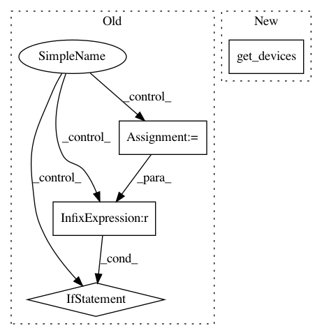

c6edefdca203a4b58418684295203c3b521cd5bc,opennmt/runner.py,Runner,train,#Runner#Any#Any#Any#,127
Before Change
if num_devices == 1:
devices = None
else:
devices = tf.config.experimental.list_logical_devices(device_type="GPU")
if not devices:
devices = tf.config.experimental.list_logical_devices(device_type="CPU")
if len(devices) < num_devices:
raise ValueError("Requested %d devices but only %d are visible" % (
num_devices, len(devices)))
devices = [device.name for device in devices[0:num_devices]]
// Set gradients accumulation based on the requested effective batch size.
if train_config.get("effective_batch_size") is not None:
After Change
trainer = training_util.Trainer(
checkpoint,
devices=misc.get_devices(count=num_devices),
mixed_precision=self._mixed_precision)
trainer(
dataset,
In pattern: SUPERPATTERN
Frequency: 3
Non-data size: 4
Instances
Project Name: OpenNMT/OpenNMT-tf
Commit Name: c6edefdca203a4b58418684295203c3b521cd5bc
Time: 2019-11-06
Author: guillaumekln@users.noreply.github.com
File Name: opennmt/runner.py
Class Name: Runner
Method Name: train
Project Name: home-assistant/home-assistant
Commit Name: ce9de1b7d235f218fe21549609121af38bcb40c6
Time: 2015-01-19
Author: grompf@gmail.com
File Name: homeassistant/external/wink/pywink.py
Class Name:
Method Name: get_switches
Project Name: home-assistant/home-assistant
Commit Name: ce9de1b7d235f218fe21549609121af38bcb40c6
Time: 2015-01-19
Author: grompf@gmail.com
File Name: homeassistant/external/wink/pywink.py
Class Name:
Method Name: get_bulbs